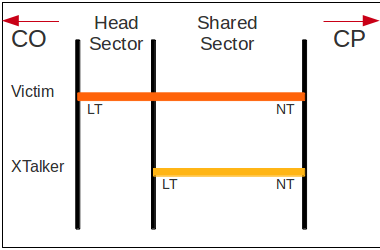

Next: CPU-bound Algorithm Development and Up: Development and Solution Previous: Solution Development Task list Contents
The fundamental datum required for DSM algorithms is a matrix of crosstalk gains between all lines. This matrix must be generated incorporating the physical relationship of different lines to each other, as well as simulating the material characteristics of the lines themselves in order to calculate the direct gains (i.e the 'cross talk gain' between line  and itself, or the matrix diagonal).
and itself, or the matrix diagonal).
Once generated, this matrix would describe the bundle of lines, and this inherent value led to the decision to develop the Simulation Framework as an Object Oriented model; the bundle object contains line objects that have individual values, such as their line and network termination locations, noise characteristics, computed SNR, preferential line rates, etc... Additional to these values, each line object exposes internal functions that perform operations on 'itself', such as calculating the far end crosstalk experienced by that line on a particular channel, and the RLCG transfer function over its length.
The bundle object itself defines the system configuration, and is created from a list of line values read from a file; initially it is planned that this file would contain the LN/NT distances of the line, and if required, the desired rate for that line, but the same theory could be applied to allow mixed material bundles, per line noise characteristics, and other pertinent values. The bundle object's main aims are to initially generate the cross-talk matrix, and subsequently act as an abstraction layer between the DSM algorithm and the individual line values; i.e. the bundle keeps internal arrays to store the power and bit ratings for each line for each channel, which can be operated upon by an external algorithm, and subsequently updated by the bundle itself.
The initialisation of the bundle object (i.e. the generation of the cross-talk gain matrix) can be thought of as a triply nested loop of transfer function calculations, and can be summed up in one sentence: On each sub-channel, for each line (the victim) calculate all the inter-line transfer functions between the victim and every line in the bundle (including itself, but that’s slightly different).
Calculating the direct gain (i.e. the transfer function between the line and itself), the line object simply returns its own transfer function across its length. However, for inter-line (FEXT only, in this project) transfer function calculation, the situation is more complex since lines don't necessarily have the same run length and location; there are nine possible combinations of over-lay between two given lines (plus the case where they don't share any length, hence no FEXT). These are detailed in Robert Baldemair (2003) and indicated in Figure 32, and this structure was the basis for McKinley's work in this area, but an improved, 'case-less' implementation was generated to segment the line lengths into head length (i.e where one line goes further than the other towards the CO end of the bundle), shared length (where both lines occupy the same sector of the bundle), and tail length( where one line goes further towards the CP end). Each length subsequently has a sector insertion loss (transfer function) and these are multiplied to give the final line transfer function which, incorporating a NICC3.5 FEXT model function, provides the full length gain response between the two lines on a particular channel.
The operation of segmenting these lengths and producing the cumulative transfer function is numerically subtle but conceptually simple, and with the transfer function configured to return 1 for invalid length values (i.e non-positive lengths), the cumulative transfer function product is effectively self selecting which (if any) sector length values to 'ignore' given different theoretical cases.
Mathematically,the generation of the inter-line transfer function proceeds thus;
| (3.1) |
| insertion loss |
(3.2) |
This is explained diagrammatically in Figure 32, and the source code for this function as used is in Appendix A.
|
[Case 2] [Case 6] [Case 3] [Case 7] [Case 4] [Case 8] [Case 5] [Case 10] |
As noted previously, incorporation of a Beta probability distribution sample data offsetting can be used to more accurately model the stochastic relationship in inter-line gains based on the locations of those lines in the bundle. This is accomplished by scalar multiplication of the per-channel cross-talk gain matrix with a  sub-matrix of static gains measured from a 'real' bundle (See Equation 2.8). One advantageous side effect of this appears in bit-loading of bundles with some 'identical' lines; due to the numerical instability of some bit-loading algorithms and specifically the generation of line power spectral densities, assigned bit-loads can fluctuate violently between identical lines, producing very impulsive spectra. The relatively tiny gain adjustments applied to different identical lines in the simulated bundle present enough of a 'difference' to overcome this behaviour.
sub-matrix of static gains measured from a 'real' bundle (See Equation 2.8). One advantageous side effect of this appears in bit-loading of bundles with some 'identical' lines; due to the numerical instability of some bit-loading algorithms and specifically the generation of line power spectral densities, assigned bit-loads can fluctuate violently between identical lines, producing very impulsive spectra. The relatively tiny gain adjustments applied to different identical lines in the simulated bundle present enough of a 'difference' to overcome this behaviour.
Following from the general Object Oriented architecture, and the bundle object effectively being the fundamental core of the simulation system, this object also maintains control of GPU-based algorithm specific functions, and in the case of multiple GPU operation, maintains persistent thread-pool and task queuing references within a GPU object.
The Initial stage of verification for the system was the comparison of generated Channel Matrices to those found in Alastair McKinley (2009). Due to the different math libraries utilised between McKinley's implementation and this, direct comparison on numerical results is not reliable as a verification method, but test results obtained match those from McKinley to within IEEE floating point specifications. A better comparison is a visual one (Figure 33).
|
|
Andrew Bolster 2011-05-22